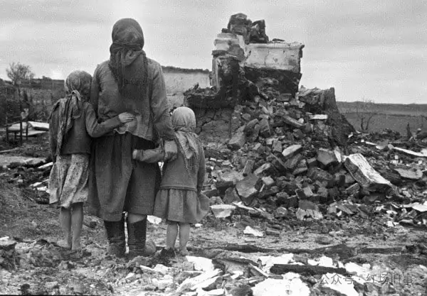
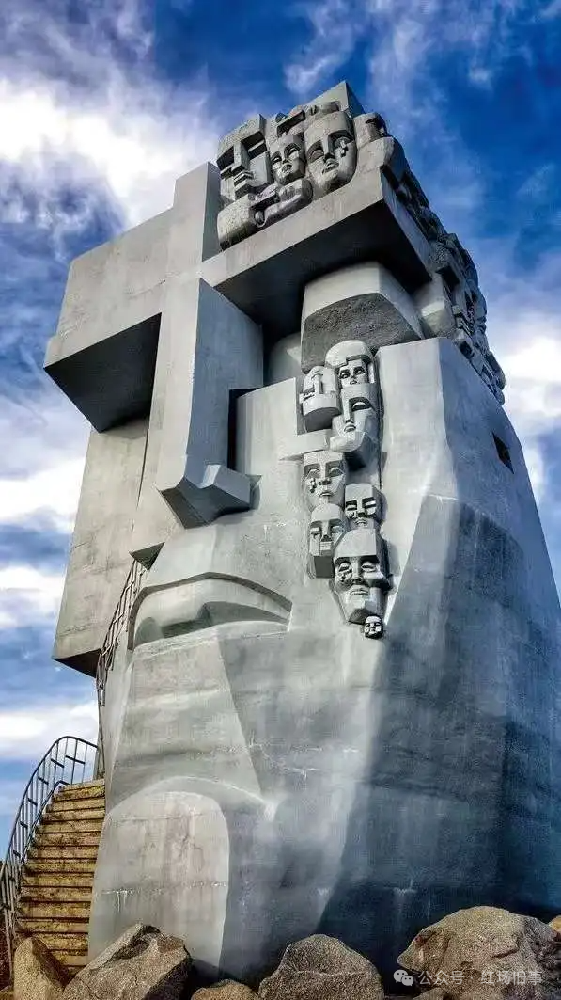
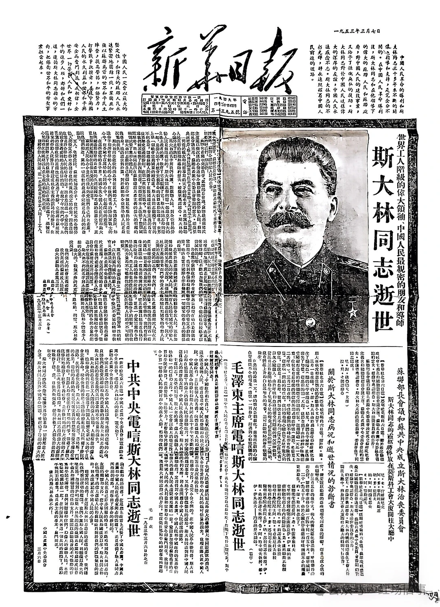
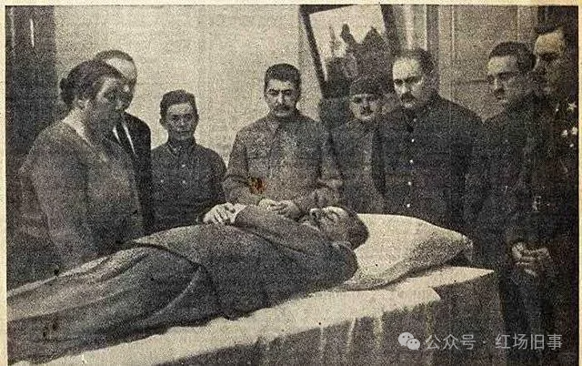

“白大褂里的阴谋”：斯大林临终前，犹太医生遭遇了什么？
文字与图片版权归各自权利人所有。 查看公众号原文 ↗
1945年5月9日，莫斯科的天空被焰火照亮红场上，人们拥抱、欢呼。四年战争终于结束了。2700万人牺牲，但胜利属于他们。士兵们从柏林凯旋，姑娘们把鲜花塞进他们的枪管。人们相信，战争结束了，苦难也该结束了。然而，阴影并未消散。那些从战场活下来的人，那些从集中营被解放的人——他们将发现：战争虽然赢了，但考验仍在继续。斯大林还在，秘密警察还在，劳改营还在。1945年之后的苏联，胜利与艰难并行。这是一个打赢了战争的国家，和一个越来越孤独、越来越封闭的领导人。
一、战俘的命运：凯旋归来，却面临审查1945年春天，伊万诺夫终于回家了。他在德国集中营里熬过四年。英美军队解放集中营后，他被移交给苏方接收人员。对方说：“你需要接受审查。”伊万诺夫不明白。他以为自己是英雄——在集中营里他没有背叛祖国。但根据战时规定，任何被俘者都需要经过甄别，以确认是否曾被敌人利用。这不是他一个人的遭遇。战后，超过500万苏联公民曾处于德国占领区或战俘营，约200万被遣返回国。他们被送入“过滤营”，由专门机构进行身份核查。大部分人经审查后获释，重返正常生活。一个参加过斯大林格勒保卫战的老兵，因为曾在德国人农场干过活，回国后被限制居住地。他的妻子申辩：“他在斯大林格勒流过血！”工作人员耐心解释，这是为了查清事实。战争英雄与“被审查者”之间，有时只隔着一道复杂的程序。
二、返乡者：最熟悉的陌生人比战俘更坎坷的，是那些曾被迫为德国人工作的人。1941年至1944年，德国占领军征召了约300万“东部劳工”——大部分是年轻女性，被送到德国工厂做苦工。她们每天工作12小时，很多人死于轰炸。1945年，她们被解放了。英美军队把她们交给苏方时，她们甚至有些高兴——终于可以回家了。回家后，她们发现生活并不容易。接收站里，工作人员需要核实每个人的经历。“你在德国做什么工作？”这些问题虽令人难堪，却是为了国家安全。一个叫安娜的女孩回到村子，邻居们投来异样的目光。未婚夫退了婚。她去工厂找工作，人事科需要更多证明材料。经过层层核实，她最终被录用。1946年，苏联内务部发布通知：所有“东部劳工”可在原籍或指定地点安置，获得工作和住房。许多人在安置点重新开始生活。她们熬过了德国的炸弹，如今需要熬过同胞的误解。
三、战后饥荒：大地的考验1946年，乌克兰农村。玛尔法的丈夫牺牲在斯大林格勒，大儿子牺牲在库尔斯克。她一个人种着三公顷地——按规定，收成大部分要上交国家。这一年，干旱来了。麦穗干瘪，土豆烂在地里。玛尔法每天起早贪黑，还是没凑够交粮的定额。收粮队来了。他们耐心解释：“国家需要粮食恢复重建。”玛尔法含着泪，看着粮食被装上车。这一年，苏联部分地区遭遇严重干旱，粮食大幅减产。政府实施配给制，优先保障城市和军队供应。1946-1947年，乌克兰和俄罗斯南部部分地区出现饥荒，据估计有数十万人因营养不良而死亡。人们吃草根、树皮，甚至发生人吃人的惨剧。

与此同时，莫斯科的面包店继续供应配给面包。城乡差距在这一刻显得格外刺眼。1947年，收成好转，饥荒逐渐缓解。但那些消失的生命，永远留在了那片干旱的土地上。
四、强制劳动：特殊时期的特殊安排战后初期，苏联面临巨大的重建压力。数万家企业被毁，数百万劳动力牺牲。在这种情况下，劳改营系统成为补充劳动力的方式之一。1945年至1953年，劳改营囚犯数量从约100万增加到250万。他们中有战俘、有被俘人员、有被认定“政治上不可靠的人”，也有普通刑事犯。他们在西伯利亚砍树，在中亚挖矿，在远东修铁路，在北极圈内建城市。诺里尔斯克——世界上最北的城市——正是在囚犯劳动中建成的。冬天零下50度，条件艰苦。劳改营是战后重建的劳动力来源之一。第聂伯河水电站修复、莫斯科大学主楼建造，都有劳改营囚犯的参与。一个幸存者回忆：“我们是在为国家重建付出。”

古拉格纪念碑《悲伤的面具》
五、犹太医生案：晚年的风暴1953年1月13日，《真理报》头版刊出一则消息：“一批白大褂里的破坏者被破获。”报道称，克里姆林宫的医生们——大部分是犹太人——受“国际犹太民族主义组织”指使，企图通过错误治疗暗杀苏联领导人。他们被指控害死了日丹诺夫和谢尔巴科夫。这就是“医生案”，斯大林晚年的一起重大案件。1948年，著名犹太演员米霍尔斯被秘密逮捕。1949年，一批犹太知识分子被调查。1953年初，莫斯科的犹太医生开始被捕。克里姆林宫内部气氛紧张。莫洛托夫的妻子——犹太人——已被关进监狱。卡冈诺维奇——斯大林核心圈唯一的犹太人——每天提心吊胆。有传言说，斯大林准备将所有犹太人驱逐到远东。驱逐令据说已经起草完毕，只等签字。但斯大林没来得及签字。1953年3月1日，斯大林中风。3月5日，去世。斯大林死后第三天，贝利亚下令释放所有被捕的犹太医生，宣布“医生案”是捏造的。大规模驱逐没有发生。那些在牢房里等待判决的医生们，在最后一刻活了下来。
六、秘密警察依旧存在战后，秘密警察改名为内务部，后来又改名国家安全部，但职能未变。它依然是社会管理的重要工具。工厂、机关、学校——到处都有“线人”存在。人们学会了在公共场合谨言慎行。孩子可能无意中说出父母谈论的内容。1946年，苏联通过一系列法令，恢复战时被放松的审查制度。任何“反苏言论”都可能被举报。诗人、作家、科学家——只要思想“不符合要求”，就会从公共生活中消失。一个苏联公民的典型经历是：在卫国战争中失去一条腿，战后因言论不当被举报，经过审查后获释。他的一生，始终处于社会的注视之下。
七、斯大林晚年：越来越孤独，越来越封闭战后，斯大林极少出现在公众视野。他住在孔策沃别墅，深居简出。别墅里永远灯火通明，因为他不喜欢黑暗。他经常在深夜召见政治局委员，让他们陪自己吃饭、喝酒到凌晨。没人敢拒绝。贝利亚后来回忆：“晚年的斯大林，谁都不相信。他怀疑所有人。”他怀疑莫洛托夫——资格太老，可能取代他。他怀疑伏罗希洛夫——战争期间表现得太出色。他怀疑米高扬——和美国人走得太近。1952年十九大后，斯大林改组政治局，把老战友们统统降职。他准备再来一次调整——这一次的目标，是他身边最亲近的人。医生案就是信号。那些被捕的医生，曾经给斯大林看过病。他想用医生案撬开一个口子，把调查扩大到整个领导层。但时间站在他的对立面。1953年2月28日，斯大林最后一次宴请贝利亚、马林科夫、赫鲁晓夫等人。凌晨四点，客人们散去。次日，警卫发现他倒在地上。3月5日，斯大林去世。终年74岁。

1945年5月，苏联人以为等来的是和平。他们以为战争结束，苦难就会结束。现实远比想象复杂。战后八年，是胜利的八年，也是重建的八年。战俘接受审查，返乡者艰难融入，饥荒考验意志，劳改营依旧运转，犹太人险些被集体迁移，秘密警察无处不在。斯大林晚年越来越封闭，越来越孤独。他在胜利的巅峰上筑起高墙，把自己和世界隔开。1953年3月，斯大林死了。

苏联人哭了——有些人是因为悲伤，更多的人，是因为迷茫。他们不知道，没有斯大林的日子，会是什么样。后来的历史证明：没有斯大林的苏联，活了很多年。而那些在战后艰难岁月中坚持下来的人，见证了帝国的延续与变迁。胜利的喜悦是真的，战后的艰难也是真的。它们在同一片土地上同时存在，构成了一代人无法抹去的记忆。